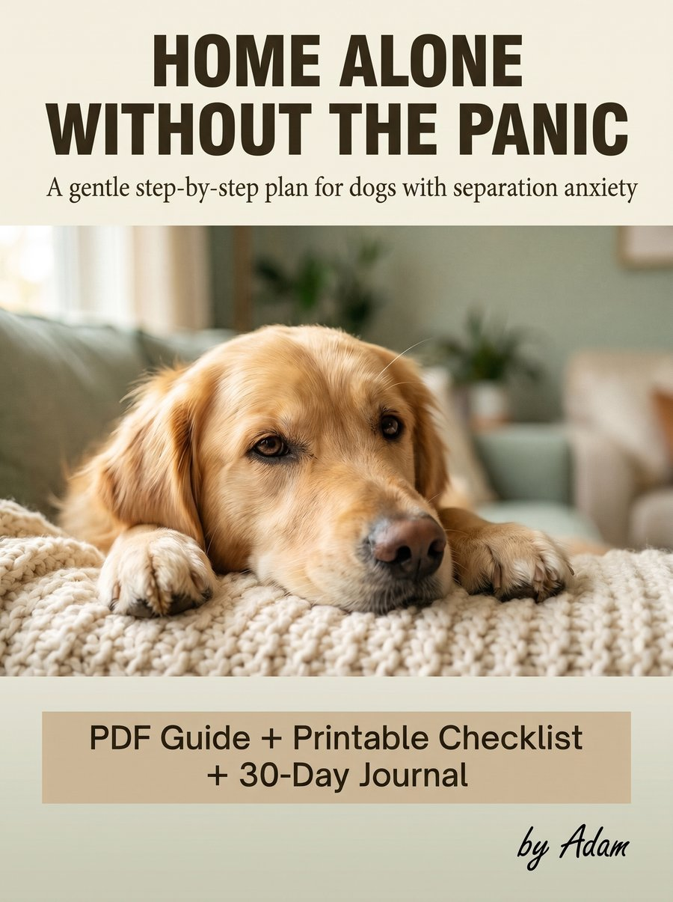

Home Alone Without the Panic is a gentle, step-by-step PDF guide for dogs with separation anxiety. No harsh methods, no special equipment. Just small steps your dog can handle.
Includes a printable checklist and a 30-day progress journal.
That is the idea: start so small your dog stays calm, then grow it slowly.

Maybe it is the howling that the neighbors can hear. A chewed doorframe. An accident on the floor. A video on your phone that breaks your heart.
Your dog is not being bad. A dog with separation anxiety is scared. Punishing fear does not remove it, but patient practice can ease it. This guide shows you how, one small step at a time.
Learn the real signs, the common causes, and how to tell separation anxiety from boredom or other problems.
Film your dog, spot the pattern, and know when to see your vet first.
Train below the panic threshold. This one idea is what makes progress possible.
From relaxing on the bed, to moving out of sight, to door departures, to longer real-life absences.
Dog won’t eat? Fine for 10 minutes, then panics? Troubleshooting for the hard days.
Clear signs it is time to talk to a vet or certified behavior professional.
One page for the fridge: before, during and after each session, with green lights and red lights to watch for.
Track every small win and see how far your dog has come, even on slow days.
I wrote this guide because I know how heavy that moment at the door feels. I am not a veterinarian or a professional trainer. I put together the clearest, kindest plan I could, and I keep it honest about what it can and cannot do.
A PDF guide you can read on your phone, tablet or computer, plus the printable checklist and the 30-day journal. You get the download link right after payment, and by email.
Every dog is different, and I cannot promise a result or a timeline. The guide gives you a gentle, proven-style approach based on small steps. For severe cases, talk to your vet too.
No. A phone or tablet to film your dog is helpful. Chews or lick mats help too, but they are optional.
No. It is educational. If your dog is hurting themselves or you are worried about their health, please see your vet.
Reply to your Gumroad receipt email and I will help.
$12.99 for the full guide, the checklist and the 30-day journal. Instant PDF download.
Get the guide